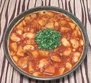

|
Bean Curry for BunnySouth Africa - Bean Curry | ||||
| Makes: Effort: Sched: DoAhead: |
2.2 # *** 55 min Best |
Curries of this sort are made in the Indian communities of Durban, South Africa, for use as vegetarian filler for Bunny Chow, which was originally vegetarian. See also Comments. | |||
|
14oz 9 7 3 ------- 1 7 2 1 ------- 2 1/2 1/2 ------- 2 1 1/2 8 |
can oz oz cl ---- t in ---- t t t ---- T c t oz |
Butter Beans (1) Potatoes (2) Onions Garlic -- Whole Spices Cumin Seeds Curry Leaves (3) Cinnamon Stick Bay Leaf -- Seasonings Curry Powder (4) Turmeric Garam Masala (5) -- Finish Oil Water Salt Tomato Sauce (6) |
PREP - (17 min)
|